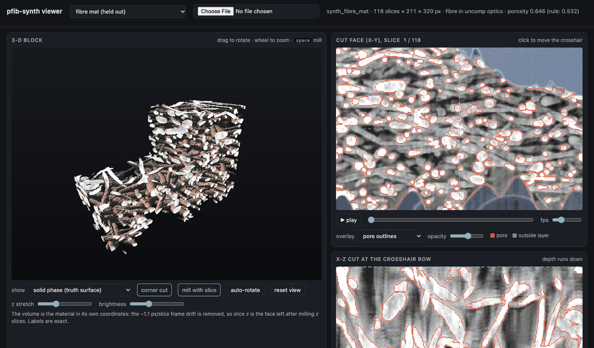

Synthetic pFIB-SEM stacks of porous catalyst layers, with exact ground truth for every pixel. The generator builds a 3-D material, mills it one slice at a time, and renders each cut face the way the 52° electron beam sees it, calibrated to three real acquisitions.

Each one: the block being milled, the solid in 3-D, the stack slice by slice with its truth, an x-z cut sweeping through, and where a threshold rule misses pores whose lit floor shows through.
Builders the generator also has (--family), rendered in the calibrated optics. Not validated against real stacks.